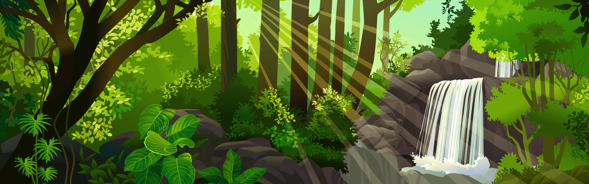

Um dia apareceu um navio piara e eu decidi segui-los!
Você começa sua jornada saqueando uma cidade.
Parabéns você ganhou um cartaz de procurado
No topo da ilha do kaido você encontra ele.

Você decide que a aventura é grande demais e volta para casa.
Você derrotou Kaido e vai atrás da Big Mom.
Explorando a ilha da Big Mom um tesouro
Na ilha da Big Mom você é derrotado.
em elbafe você encontra um imperador!
em log tayo vpcê encontra um almirante
você encontra um almirante de frota

em elbafe você encontra barba branca
Retornando a log tayo você encontra gold roger